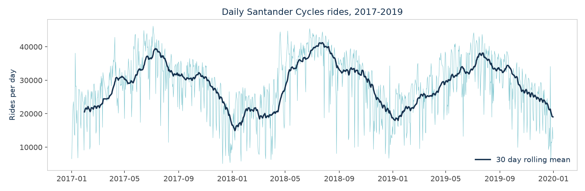
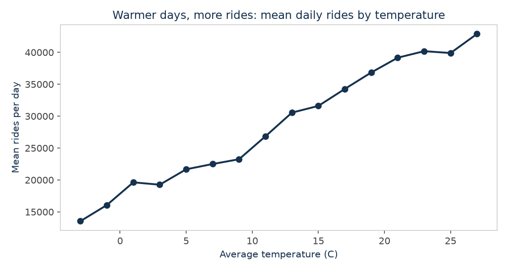
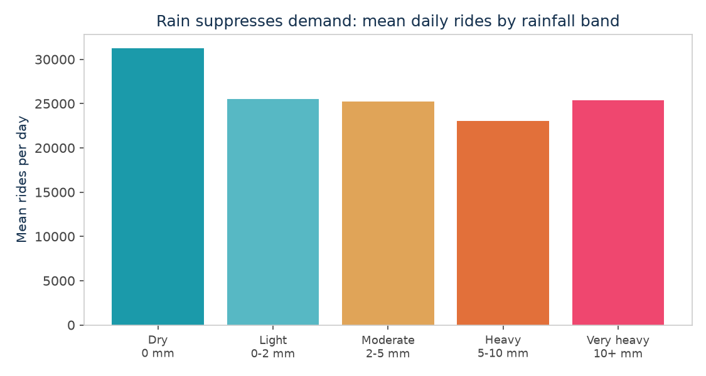
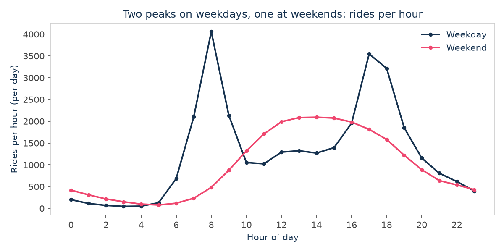
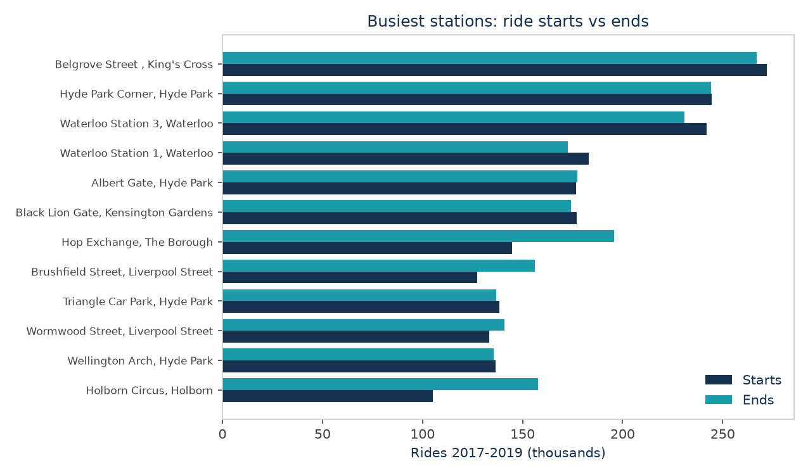
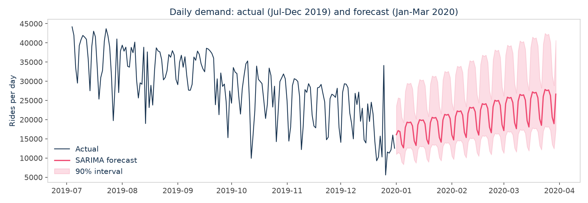

Santander Cycles demand vs Heathrow weather, 2017-2019. BigQuery public datasets london_bicycles + noaa_gsod, computed locally from the official TfL and NOAA sources.




Weekday rides inside the commute windows (07:00-09:59 and 17:00-19:59) make up 55.4% of weekday rides, against 26.6% at weekends. Median trip duration: 13.0 minutes on weekdays, 16.0 minutes at weekends.

| Model | Evaluation | MAE | RMSE | R2 / MAPE |
|---|---|---|---|---|
| Weather regression (linear, BigQuery ML equivalent) | trained 2017-2018, tested on 2019 | 3,486.6 | 4,623.9 | R2 0.664, MAPE 15.6% |
| Demand forecast (SARIMA, ARIMA_PLUS equivalent) | last 90 days of 2019 held out | 3,541.5 | 4,867.7 | MAPE 20.7% |
| Seasonal naive baseline | same holdout | 10,463.0 | 12,014.1 | MAPE 63.9% |
